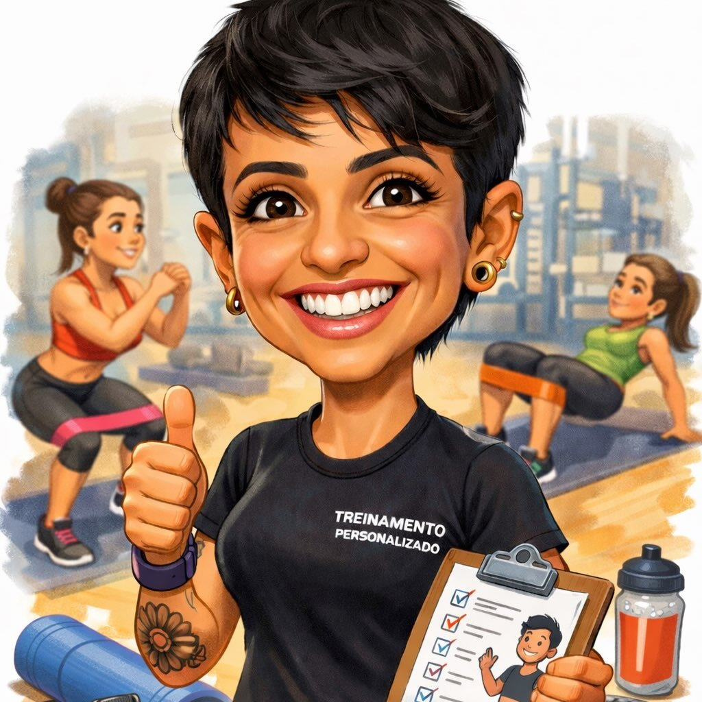

Thiago Silva
Transformando ideias em projetos
Sou especializado em
Minha especialidade é garantir que o site seja visualmente atraente, fácil de navegar, responsivo para dispositivos móveis e acessível a pessoas com qualquer tipo de deficiência: seja física ou cognitiva.
Conceituação
Todos os projetos baseiam-se nas necessidades do cliente: do conceito do projeto à produção, utilizando as melhores práticas.
UI/UX
Excelente interface e experiência do usuário (UI/UX), garantindo a interatividade, o visual e a sensação de uma tela de produto ou página da web.
Design Visual
Design visual que utiliza imagens, cores, formas, tipografia e estrutura para aprimorar a usabilidade e melhorar a experiência do usuário.
Interação
Sites interativos com botões animados, efeitos parallax, chamadas para ação, layouts de grades complexos, cards, rolagem suave para o topo da página, blogs e muito mais.
Alguns projetos desenvolvidos
Soluções e Websites desenvolvidos para alguns clientes
Desenvolvi alguns projetos de front-end para todos tipos e setores de empresas. Clique no link abaixo para ver a demonstração do projeto ou acesse todos os arquivos na minha página de trabalhos.
Advocacia , Academias, Turismo , Personal Trainner , Clones ,Ver mais projetos


- Clientes
- > 10
- Prêmios
- 3
- Horas Trabalhadas
- > 7500
- Projetos
- > 15
Empresas que tiram suas ideias do papel com a gente.
Mais do que clientes, construímos parceiros de negócios. Conheça algumas das empresas que confiam a sua identidade visual, papelaria corporativa e campanhas promocionais à qualidade e pontualidade comigo.



O processo de desenvolvimento
Estas são apenas algumas etapas iniciais que abrangem a fase de planejamento e desenvolvimento do projeto para websites. As demais fases — entrega de código, revisão e manutenção do projeto — são únicas de cada projeto de desenvolvimento.
Discussão do Projeto
At this stage, a discussion takes place with the client about the project to be developed.
Brainstorming & Requisitos
Realizo uma reunião para alinhar ideias e definir conceitos e necessidades do projeto. Nessa etapa, também verifico se o cliente possui boas fotografias e o logotipo da empresa.
Eperiência do Usuário
Todo o planejamento visual (links, botões, cores, tipografia, grade, seções, carrossel, cards e outros) é realizado em alguma plataforma de criação de wireframes.
Desenvolvimento
Com todos os requisitos e recursos já definidos, inicia-se a fase de desenvolvimento de código e são realizadas algumas reuniões para demonstrar o progresso do projeto.